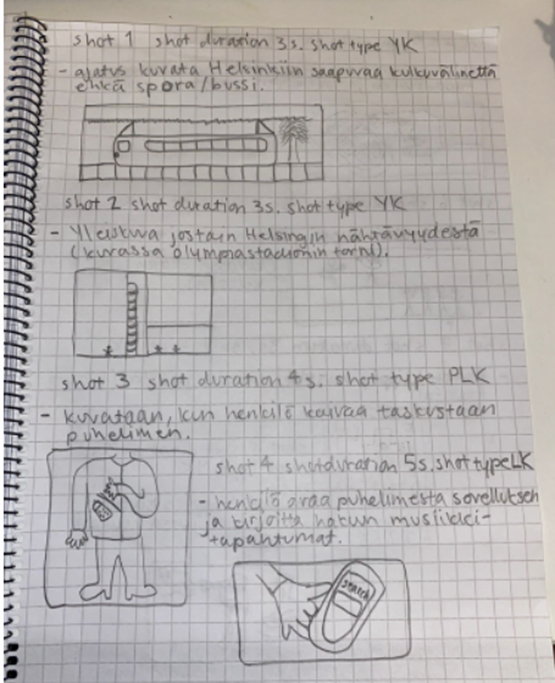
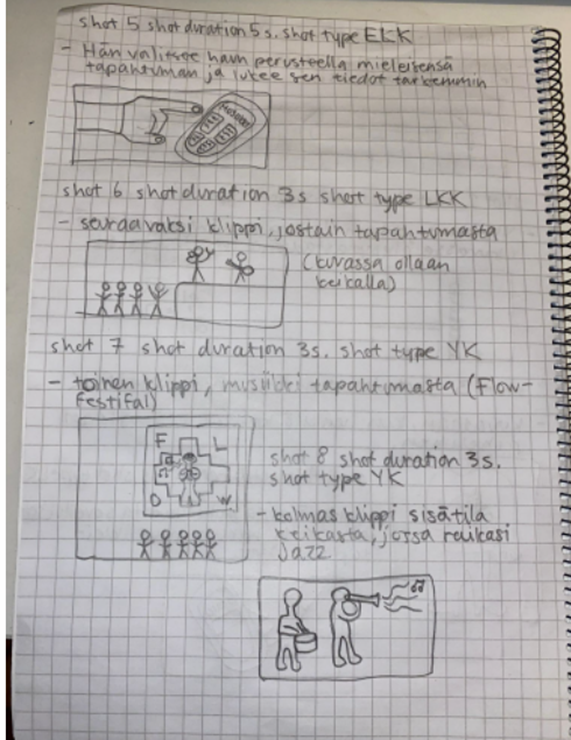
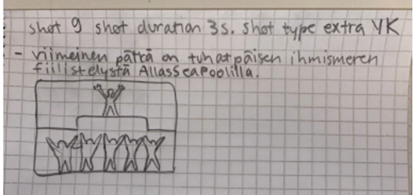

Videon suunnittelu
Videon kohderyhmä on tapahtumien suurkuluttajat, jotka nauttivat erilaisissa miljöissä varsinkin live-musiikista.
Suunnittelu: Kaikilla heräsi ajatus siitä, että video toteutetaan Helsingin ytimessä. Osalta porukasta löytyi jo hyviä videoklippejä Helsingissä vietetyistä tapahtumista ja päätimme niitä hyödyntää, kun näin opiskelijoina ei rahallisesti ollut varaa mennä varta vasten johonkin tapahtumaan kuvamaan. Sovelluksen perusrakenne toimi jo hyvin mobiililaitteella, joten halusimme esitellä sitä videolla ja se tämän videon pääpointtina olikin.
Videon puhuttu teksti suunniteltiin sillä ajatuksella, että henkilö saapuu vähän kauempaa esim. Espoo, Helsinkiin vailla ajatusta mitä hän voisikaan tehdä. Kuin salamakirkkaalta taivaalta hän muisti uuden KAS-sovelluksen olemassaolon ja päätti testata sitä. Haku kriteerinä oli musiikki ja siitä päästiinkin erilaisiin tapahtumiin, jotka henkilö löysi sovelluksen kautta. Osa tapahtumista oli ilmaisia ja joihinkin piti ostaa lippu. Videon ääninäyttelijä osasi tämän pohjalta muodostaa lauseita, ja yhdessä tuumien päätimme mikä kuulostaisi parhaimmalta. Näytteitä otettiin noin 15 kappaletta.


